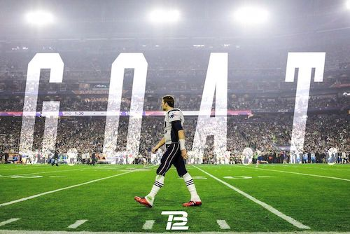

I give you...
The New England Patriots
Click here to see the GOAT's website... TB12!
The Patriots:
Go Patriots!
Go Tom Brady!
Go Sony Michel!
Tom Brady
Tom Brady is an NFL quarterback for the New England Patriots. He is #12 on offense and he is the GOAT aka the Greatest Of All Time!
"If you don't play to win, don't play at all." -Tom Brady

After having family in Massachusetts, it's no shocker that I've been a New England Patriots fan. And an even bigger fan of Tom Brady. Here are 12 reasons why Tom Brady is, in fact, the GOAT. #ThatsMyQuarterback
12 Reasons Tom Brady is the GOAT:
- He's won 6 Super Bowl's and I believe he is on his way to number 7 this year.
- He owns his own brand called TB12.
- He's older than most players and even some coaches.
- He has attended the last three Super Bowl's.
- He's married to supermodel Gisele Bundchen.
- He holds the record for most playoff wins.
- He's made 9 Super Bowl appearances.
- Ashton Martin made and sold only 12 Tom Brady Vanquish S Volante vehicles in Tom's Honor.
- He's stayed with Bill Belichick and the Patriots for 19-20 years.
- Brady has had at least 35 fourth quarter comebacks.
- He's a huge family man.
- He was originally picked 199th in the 2000 NFL Draft and look where he is now.
My Top 3 Favorite Players:
- Tom Brady
- Sony Michel
- Julian Edelman